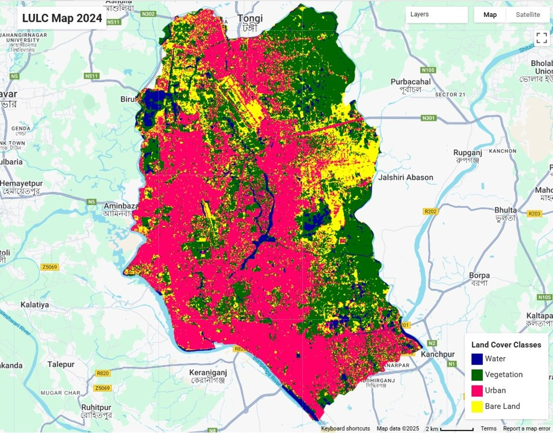
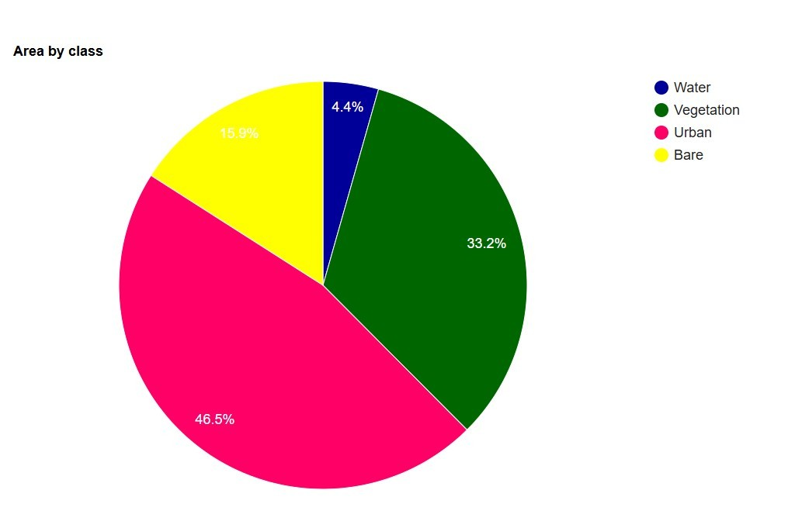
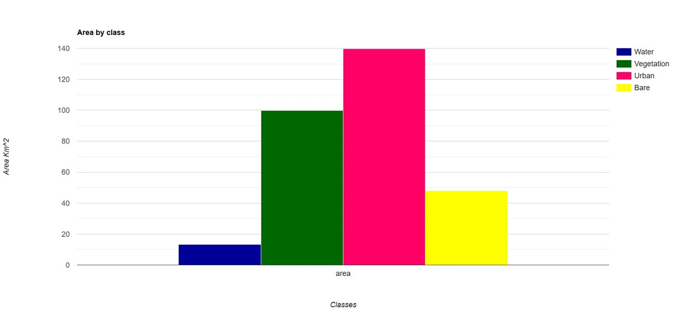

Introduction & Background
This project maps land use and land cover (LULC) in Dhaka, Bangladesh, for 2024. Dhaka is a fast-growing metropolitan area where built-up land, vegetation, open or bare land, and water meet within a dense urban landscape.
The supplied map presents four mapped classes—water, vegetation, urban, and bare land—across the selected study area. The project provides a spatial overview that can support discussion of how the urban landscape is composed and where different land-cover types occur.
Significance of the Study
A clear, recent LULC baseline makes it easier to describe the distribution of urban surfaces, vegetation, open land, and water. These classes influence urban environmental conditions and provide a useful starting point for follow-up work on urban growth, heat exposure, drainage, or green-space planning.
The 2024 map can help communicate the spatial pattern to researchers and planners. Any planning recommendation should be based on the map's accuracy, the study boundary, and additional local evidence.
Objectives
- Map the 2024 distribution of water, vegetation, urban, and bare-land classes in the study area.
- Calculate and compare the mapped area and share of each LULC class.
- Present the results in a clear map and supporting summary charts.
- Optional: add a change-detection, validation, or environmental analysis objective if completed.
Methodology
The graphic below is a reusable workflow scaffold. Replace the labels with the actual data products, processing choices, classification method, and validation steps used in this project.
Results & Visualizations
The supplied 2024 summary chart reports the following share by mapped class. These values are transcribed from the provided figure; verify them against the underlying analysis before publication.
The mapped urban class is the largest share in the chart, followed by vegetation. Bare land and water account for smaller shares. The map shows the spatial distribution of these classes, while the charts summarize their relative composition and mapped area.



Conclusion & Future Recommendations
The 2024 map provides a visual baseline of four LULC classes in the selected Dhaka study area. In the supplied class-share chart, urban land is the largest mapped category. Together, the map and charts make the pattern easier to inspect and communicate.
For a stronger follow-up, compare multiple years using consistent boundaries and methods, report classification accuracy, and connect the mapped patterns to relevant environmental indicators such as land surface temperature or drainage exposure. These next steps should be added only where supported by completed analysis.
Links & Resources
Add only links that are available and ready to share.